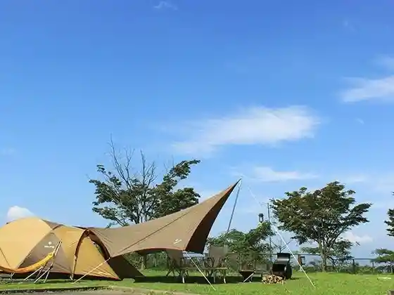
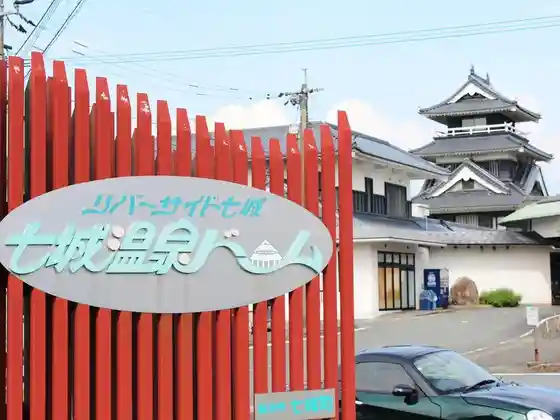
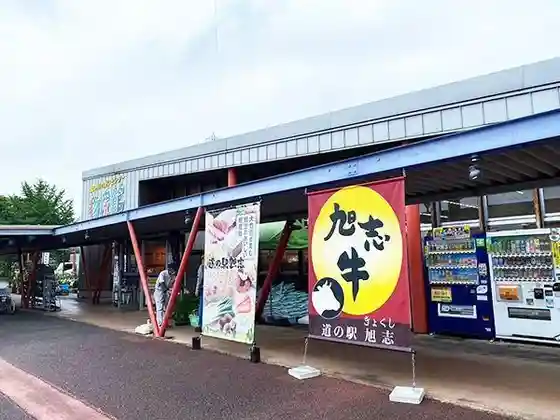

Ro no Wa no Yuki Kome
Kikuchi, Kumamoto · 0968-37-3932 · Official / source link
Shiki Village Kyokushi
Kikuchi, Kumamoto · 0968-37-3939 · Official / source link

Kikuchi Onsen
Kikuchi, Kumamoto · 0968-25-2926 · Official / source link
Shichijo Onsen Domu
Kikuchi, Kumamoto · 0968-26-4800 · Official / source link

Roadside Station Kyokushi Kyokushi Village Fureai Center
Kikuchi, Kumamoto · 0968-37-3719 · Official / source link

Roadside Station Shisui Yojo Market
Kikuchi, Kumamoto · 0968-38-6100 · Official / source link
Kikuchi Kanko Bussan Kan
Kikuchi, Kumamoto · 0968-25-5477 · Official / source link
Kikuchi Gorge Onsen Iwazo
Kikuchi, Kumamoto · 0968-27-0026 · Official / source link
Shiroyama So
Kikuchi, Kumamoto · 0968-25-2400 · Official / source link
Horai Kan
Kikuchi, Kumamoto · 0968-25-2703 · Official / source link
Watanabe Shoten
Kikuchi, Kumamoto · 0968-25-2306 · Official / source link
Kikuchi Gorge
Kikuchi, Kumamoto · Official / source link
Kikuchi Shrine
Kikuchi, Kumamoto · 0968-25-2549 · Official / source link
Kikuchi Kanko Budo Sono
Kikuchi, Kumamoto · 0968-27-0514 · Official / source link
Kikuchi Park
Kikuchi, Kumamoto · 0968-25-7242 · Official / source link
Kikuchi Kanko Naka Village Kuri Sono
Kikuchi, Kumamoto · 0968-24-1476 · Official / source link
Kita Miya Aso Shrine
Kikuchi, Kumamoto · 0968-25-2685 · Official / source link
Kikuchi Takeshige Kobo Tokoro
Kikuchi, Kumamoto · 0968-25-7232 · Official / source link
Ryumon Dam
Kikuchi, Kumamoto · 0968-27-1120 · Official / source link
Kikuchi Kanko Koryu Kan
Kikuchi, Kumamoto · 0968-25-0513 · Official / source link
Kikuchi Highlands Famirii Campground
Kikuchi, Kumamoto · 0968-27-1228 · Official / source link
Roadside Station Shichijo Merondomu
Kikuchi, Kumamoto · 0968-25-5757 · Official / source link
Kikuchi Matsu Hayashi no Ba
Kikuchi, Kumamoto · 0968-25-7232 · Official / source link
Watase Kawa, Ni Shika Rai Kawa
Kikuchi, Kumamoto · 0968-25-7223 · Official / source link
Shichijo Town Kosumoburijji Shuhen
Kikuchi, Kumamoto · 0968-25-7223 · Official / source link
Roadside Station Kyokushi Kyokushi Village Fureai Center
Kikuchi, Kumamoto · 0968-37-3719 · Official / source link
Kodachi no Naka no Yado Seiryu So
Kikuchi, Kumamoto · 0968-24-2155 · Official / source link
Petto to Toma Reru Kakure Yado Ku no Sato (Ku no Sato)
Kikuchi, Kumamoto · 0968-25-7123 · Official / source link
Doragon Campground (Ronron Kan)
Kikuchi, Kumamoto · 0968-27-0011 · Official / source link
Kikuchi Gorge Bijita Center
Kikuchi, Kumamoto · 0968-27-0005 · Official / source link
Han Jaguchi Mizumi (Ryumon Dam) Kayakku &SUP Experience
Kikuchi, Kumamoto · 096-221-9869 · Official / source link
Kikuchi Chuo Library
Kikuchi, Kumamoto · 0968-25-1111 · Official / source link
So no Da Noen Chokubai Tokoro
Kikuchi, Kumamoto · 090-6774-2661 · Official / source link
Nakahara Matsuzuki Do
Kikuchi, Kumamoto · 0968-25-2413 · Official / source link
Den'en Waku & Raifusupesu Kikuchi Mirai Besu
Kikuchi, Kumamoto · 0968-25-2501 · Official / source link